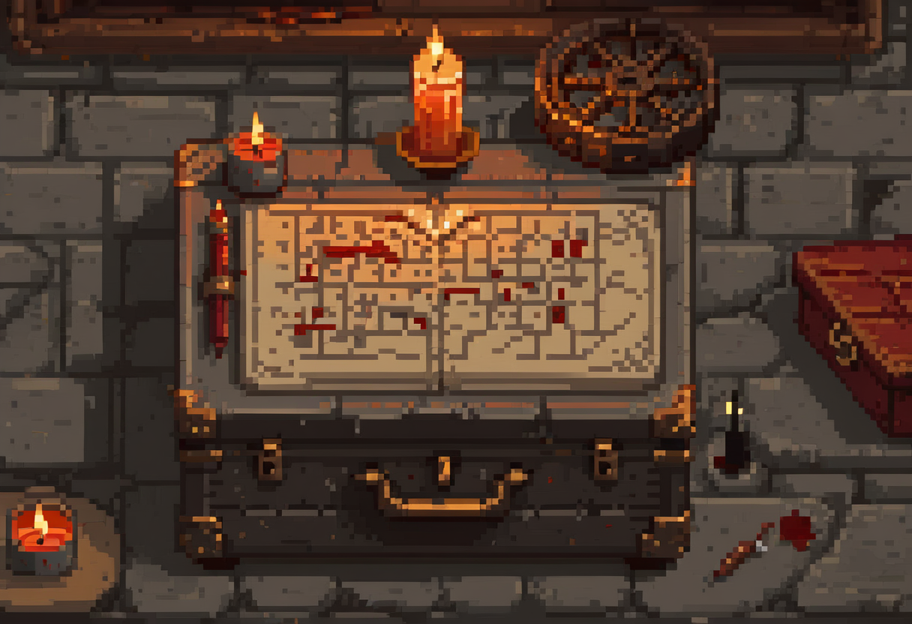

4 Cryptography

A sound cipher should remain secure when its design is public and only the key is secret.
Cryptography can protect information sent through an untrusted network, but different operations solve different problems. Encrypting a booking, hashing an export and signing a message do not provide interchangeable assurances. You do not need to derive the algorithms here; you need to identify the protection, its assumptions and the systems it depends on.
4.1 What this chapter covers
By the end you should be able to:
- Explain the difference between an algorithm and a key, and state Kerckhoff’s principle.
- Distinguish symmetric (one-key) from asymmetric (two-key) cryptography and say what each is good for.
- Explain hashing vs encryption, and where digital signatures fit.
- Reason about attacks: brute-forcing small key spaces, known-plaintext and chosen-plaintext attacks.
4.2 The algorithm and the key
Every cipher has two parts, and telling them apart is the foundation of everything else. The algorithm is the method: the fixed procedure for scrambling and unscrambling. The key is the secret input that steers it: the particular setting that turns readable plaintext into scrambled ciphertext and back. The same algorithm with a different key produces different output. The set of all possible keys is the key space, and its size is one measure of a cipher’s strength: the more keys an attacker would have to try, the better.
Here is where beginners’ intuition usually goes wrong. It feels safer to keep the algorithm secret too. Surely hiding the method helps? Kerckhoff’s principle says the opposite, and it is one of the most important ideas in the whole field:
A cryptosystem should be secure even if everything about it, except the key, is public knowledge.
In other words, the security must rest entirely on the secrecy of the key, never on the secrecy of the algorithm. This sounds counter-intuitive until you see why it’s a strength. Keeping a design secret can limit independent review without demonstrating that the design is sound. If secrecy of the algorithm is the only protection, disclosure removes it. A public algorithm, published and attacked by the world’s cryptographers for years, has earned its trust the hard way. This is why every cipher you should trust (the ones protecting your web traffic, your messages, your disk) has an openly published algorithm and keeps only the key secret. “Secret sauce” cryptography is a warning sign.
4.4 Asymmetric cryptography: a key you can publish
Asymmetric cryptography uses a mathematically related public/private key pair. The public key can be shared; the private key must be protected. Different schemes perform different jobs. Do not assume every pair can encrypt, decrypt and sign interchangeably.
With a public-key encryption scheme, a sender encrypts to the recipient’s public key and the recipient decrypts using the private key. But the sender must establish that this really is the recipient’s key. Publishing a key does not by itself solve the problem of authenticating it.
A digital signature is a separate operation: a signing algorithm uses a private key, and a verification algorithm uses the corresponding public key. Signing is not generally “encrypting with the private key”. Verification checks the signature against the message. A valid signature supports a claim about the signing key, subject to trustworthy key identity and control; it does not by itself prove a human’s intent. NIST’s Digital Signature Standard describes these distinct signing and verification operations.
Real systems often combine public-key techniques with fast symmetric protection. In a certificate-authenticated TLS connection, the browser checks the server’s certificate and name, the parties establish traffic keys, and symmetric authenticated encryption protects the traffic. Modern key agreement can derive a shared secret rather than sending a symmetric key encrypted with the server’s public key. TLS 1.3 separates these steps. If certificate validation fails, do not bypass the warning just to continue.
4.5 Hashing: one-way, and not encryption
A hash function is often grouped with cryptography but does something different, and the difference matters. Encryption is reversible. With the right key, decryption recovers the original. A cryptographic hash is deliberately one-way: it turns any input into a fixed-length fingerprint that cannot be reversed to recover the input. You met this in the last chapter, where systems store the hash of a password rather than the password itself.
Encryption aims to protect confidentiality. A cryptographic hash gives a compact comparison value designed to make it infeasible to find a different input with the same digest. Collisions are mathematically possible; “every change must produce a different hash” is not the guarantee.
To check a downloaded file, compare its digest with an expected value obtained through a trusted channel. If an attacker replaces both the file and its advertised digest, comparison alone proves nothing about authenticity. A keyed message authentication code or a signature can add authentication under the relevant key assumptions.
Encryption alone also need not detect tampering. Authenticated encryption combines confidentiality with an integrity check, rejecting altered protected data. Use a maintained protocol or library rather than assembling your own combination. Key theft, a compromised endpoint or an authorised but malicious application session can still expose the plaintext.
4.6 Attacks, and the limits of weak crypto
Understanding how ciphers fail sharpens the intuition. The simplest failure is a key space too small to matter. The classic Caesar cipher shifts each letter by a fixed amount. But there are only twenty-five possible shifts, so an attacker tries them all in seconds. A monoalphabetic substitution cipher, where each letter maps to another, has an enormous key space yet still falls easily, because it leaks the structure of the language: letter frequencies survive the substitution, and ‘e’ is still the commonest letter. A big key space is necessary but not sufficient. A cipher can be broken by the patterns it fails to hide.
Cryptographers also reason about what an attacker gets to see. In a known-plaintext attack, the attacker has some plaintext and its matching ciphertext and uses the pair to attack the key. In the stronger chosen-plaintext attack, they can feed in plaintext of their choosing and study the output. A cipher worth trusting must withstand even an adversary with those advantages. That is why real ciphers are published and battered by experts rather than kept secret and hoped over.
Well-chosen modern cryptography can make direct cryptanalytic attacks impractical. Attackers may instead exploit the surrounding system. They steal the key from a poorly protected file, trick a user into revealing it, exploit a bug in the implementation of a sound algorithm, or take the data before it’s encrypted or after it’s decrypted. Even ransomware, which weaponises encryption against you, succeeds through the plumbing (how it gets in and what it can reach) rather than by breaking the cipher. The defender must examine both the cryptographic choice and its operating conditions; neither should be assumed correct merely because encryption is present.
4.7 Where this connects
Password verification uses the hashing ideas introduced in authentication. The encrypted tunnel a VPN builds rests on the symmetric, asymmetric, and key-exchange ideas here, as VPN and firewalls will show. And the secure connection behind every reputable website is the hybrid scheme described above, which returns in web security and data protection.
4.8 Questions to consider
- Why is it a good thing that strong ciphers publish their algorithms openly?
- Symmetric crypto is faster; asymmetric solves key distribution. Sketch how a real system might use both.
- What’s the practical difference between hashing a message and encrypting it? When would you want each?
4.9 Choose the protection
In 10 minutes, decide what protects Harbour’s traffic, stored records and backup comparison values. Explain one limitation of each choice. Your answer should recognise that an application can export plaintext after login, and that a hash beside an editable file needs a separately trusted reference. Compare with the worked dossier only after making your choices.
Case inputs and checks: Harbour dossier.